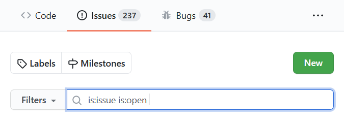

歡迎閱讀 Syncthing 文件！¶
新使用者可以從開始使用指南開始，接著或許可以參考常見問題。如果在裝置之間連接遇到問題，防火牆設定頁面會解釋需要哪些網路設定才能讓它正常運作。
開發人員如果想要開始貢獻，請參見如何建置、如何偵錯，以及貢獻指南。本文件網站可以在 GitHub 上編輯。
聯絡方式¶
如果您想聯絡特定的人員，請參閱 Project Presentation。
若要回報臭蟲或請求功能，請使用議題追蹤器。在進行之前，請確認您正在執行最新版本，並快速搜尋以確認該議題是否已經被回報。

若要回報安全性議題，請依照安全頁面上的指示操作。
若要獲得幫助與支援、討論使用情境，或是與其他使用者及開發者聯繫，您可以前往友善的論壇。
如有其他事項，您可以聯絡維護者成員，目前為 @calmh、@AudriusButkevicius 與 @imsodin。
- 介紹
- 使用方式
- 命令行操作
- 常見問題
- Versions & Releases
- 組態
- 進階組態
- Folder Types
- Introducer Configuration
- The GUI Listen Address
- LDAP Authentication
- Configuration Tuning
- Prometheus-Style Metrics
- Understanding Synchronization
- Untrusted (Encrypted) Devices
- 防火牆設定
- Relaying
- Using Proxies
- SSH Tunneling
- 忽略檔案
- File Versioning
- Syncthing 探索伺服器
- Syncthing 中繼伺服器
- 自訂升級伺服器
- 自動啟動 Syncthing
- 社群貢獻
- Profiling
- 反向代理設定
- Security Principles
- 自動當機回報
- 開發
- 規格
感謝¶
我們感謝所有文件貢獻者的辛勞：
Jakob Borg (calmh), Audrius Butkevicius, Syncthing Release Automation, Tomasz Wilczyński, Simon Frei (imsodin), Adam Piggott (ProactiveServices), André Colomb (acolomb), Stefan Tatschner (rumpelsepp), Marcus B Spencer, Ross Smith II, Lode Hoste (Zillode), Max, Jerry Jacobs (xor-gate), JohnVeness, Nate Morrison (nrm21), Lars K.W. Gohlke (lkwg82), Stefan Kuntz (Stefan-Code), Alexandre Viau (aviau), Scott Klupfel (kluppy), Martchus, Marc Laporte, Cedric Staniewski (xduugu), bt90, camoz, Antony Male (canton7), Otto Jongerius, Alex Chan, Peter Kaminski, Andrey D (scienmind), Peter Gervai, Peter Badida, raferobinson, Austin S. Hemmelgarn, Emil Lundberg, novoid, sa3dany, Salim B, Matt Sieren, Matt Burke (burkemw3), Matic Potočnik, Martin Lazarov, Scott Hansen, Brian, Stephen, bugith, C Bhushan, alex2108, Tom Hale, Pierre-Alain TORET, Catfriend1, Tommy van der Vorst, Majed Abdulaziz (majedev), Louis Sautier, Unrud, Leo Arias (elopio), Laurent Etiemble (letiemble), Valerii Hiora, Ken Marsh, Wulf Weich (wweich), jodusnodus, Jesse Lucas, 93-infinity, Daniel Clay Smith, zertrin, Iliyan, hlovdal, Gal Szkolnik, DavidFair, Frank Sachsenheim, Evgeny Kuznetsov, Eric P, Kelong Cong (kc1212), Michael Vorburger ⛑️, djtm, Dominik Schrempf, Duncan Smart, Dylan Sprague, Edd Barrett, eddsalkield, digital, dertalai, Ethan, Dennis Gaida, fejese, Felix Ableitner (Nutomic), fferrann, Filip Harald, Francois-Xavier Gsell (zukoo), Frank Harper, Dawid Wróbel, Function-10, David Rimmer (dinosore), Gavrilov Aleksej, Girish Ramakrishnan, Gleb Zakharov, graboluk, Gusted, Göran Roseen, Heiko Zuerker (Smiley73), Dave Holland, Ian Sullivan, Daniel O'Connor, iTob191, Ivan Vyshnevskyi, Daniel Krol, Jakob Egger, James Hartshorn, Jason, Jason Lingohr, jbratu, Jean-Denis Vauguet, Jeroen Evens, dan2468, Dan Dascalescu, Jimmy Jones, Jip-Hop, Jo Wouters, Dakota, John Buckley, Johnny Rock, daftaupe, Jonas, Jonathan Cross, Jonathan Vasquez, JsBergbau, jtagcat, ka7, kaitlyn, Karol Pucyński, 2nv2u, cron410, Kiryuu Sakuya, Kramoule, krmathis, Kyle Manna, Cromefire_, Cristian Mircea Messel, Cory Salveson, Leo Famulari, Linger206, Liu Siyuan (liusy182), cmillsa2, Christian Kellermann, Luiz Angelo Daros de Luca, Luni, chaosORCHESTRA, Cameron Steffen, Marcin Orlowski, Marco Köpcke, marco-m, calvin ardi, Mariano Rodríguez, Marius Volkhart, Brandon Zylstra, Martin Freund, brad2014, Martin Michlmayr, Marwâne Chahed, Boris Rybalkin, bitinerant, Matt Kantor, bigscoop, Matthew Davis, Matthew Harris, Matthias Braun, bestlibre, dinosore, Mike Nolta, MikeLund, Mingwei Samuel, Morphy99, Moviuro, MrChenWithCapsule, mseravalli, Benjamin Schmid, NCDanielH, ngirard, NickPyz, Nico Stapelbroek, Nicolas Perraut, Benjamin Masters, nware-lab, Oliver Freyermuth, Ooker, Oskar Okuno, Ben Norcombe, Pander, Paul Donald, Paweł Woźniak, Arthur Lutz, Peter Butkovic, Peter Dave Hello, arneko, Antoni Sawicki, Phil Davis, André-Patrick Bubel, Pitxyoki, Quentin Hibon, Andrew Colin Kissa, Rahmi Pruitt, Rajshekhar K, realtobman, Reto Kaiser, RichardUUU, Rikiub%, rollbrettler, Romain Gay, Andrej Shadura, rrosini, Andreas Gohr, Andreas Deininger, Samuel Li, Samuel Smoker, Sanjeev Gupta, sapient_cogbag, schnappijedi, Anderson Mesquita (andersonvom), Anatoli Babenia, Sergio Livi, Amin Vakil, sliterok, Stefaan Ghysels, alexvoda, Alexandre Maurer, StefanKopieczek, Stefano Probst, Alexander Graf (alex2108), Alexander Baumann, Sébastien Wains, Sébastien WENSKE, Tamás Sallai, terrycloth, terzinnorbert, theincogtion, Thomas Dalichow, Thomas De Rocker, Thovthe, Tim Abell, Tim Boudreau, Tobbe, Tobi, Alex Scammon, Alex Gorichev, AJ ONeal, tuathail, twomice, Tyler Kropp, uglygus, Adrian Rudnik, abdeoliveira, Vincent Ardern, Vincent Rischmann, Vium, Wieland Hoffmann, Willem Oosting, Wojciech Geisler, Abdelrahman Abdelhafez, Yakov Litvin, 4cdn, zocker-160